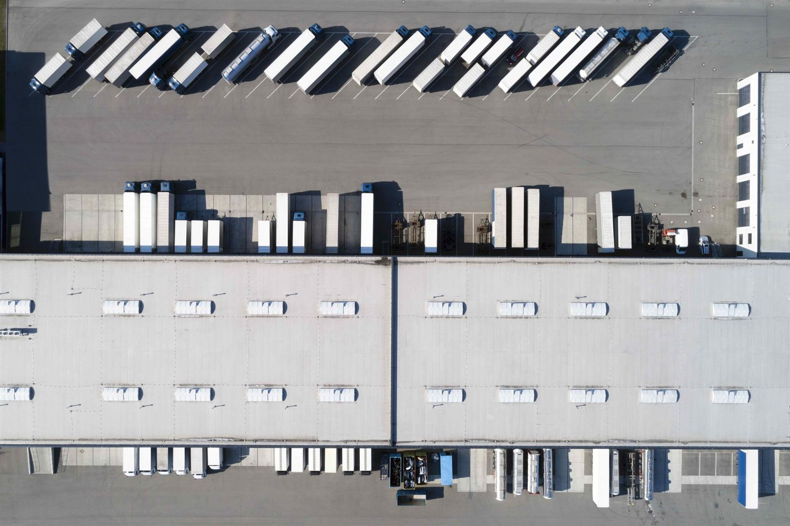
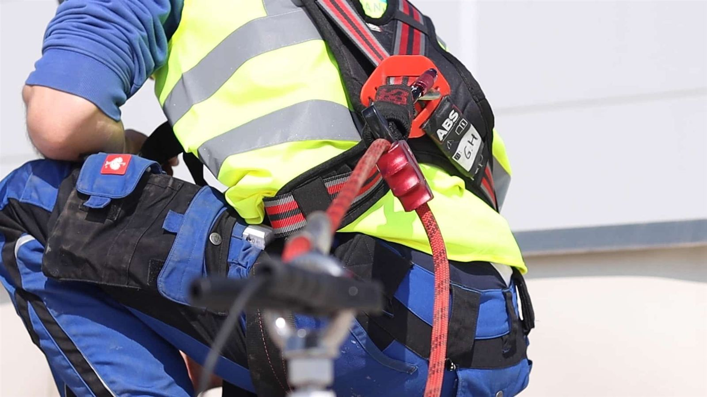

Planes de mantenimiento preventivo y correctivo adaptados a cada nave. Prolongamos la vida útil de tu cubierta y garantizamos la continuidad operativa.
Solicitar plan de mantenimiento
Inspecciones periódicas para evitar problemas antes de que ocurran
Protocolo completo con estado de cada elemento de la cubierta
Adaptado al tipo de cubierta, uso y presupuesto disponible
Diseñamos y ejecutamos planes de mantenimiento adaptados a cada nave industrial. Nuestro enfoque preventivo se centra en detectar y resolver pequeños problemas antes de que se conviertan en costosas averías.
Cada visita de mantenimiento incluye una inspección técnica completa con documentación fotográfica del estado de todos los elementos: impermeabilización, juntas, sumideros, encuentros con paramentos y elementos pasantes.

Cuéntanos la superficie y tipo de cubierta y te preparamos un plan adaptado.
+34 643 167 941 info@trm-spain.com